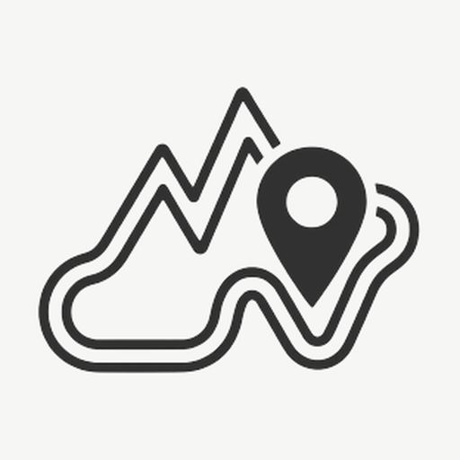
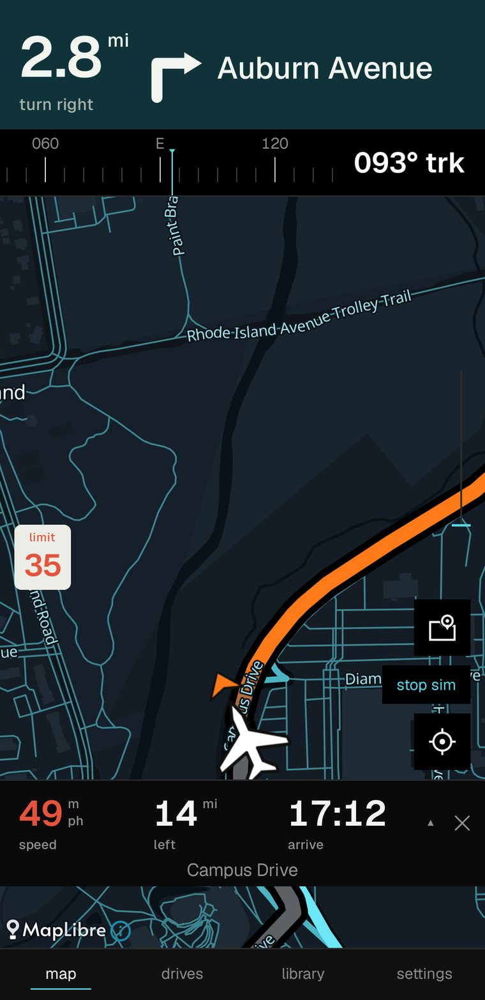
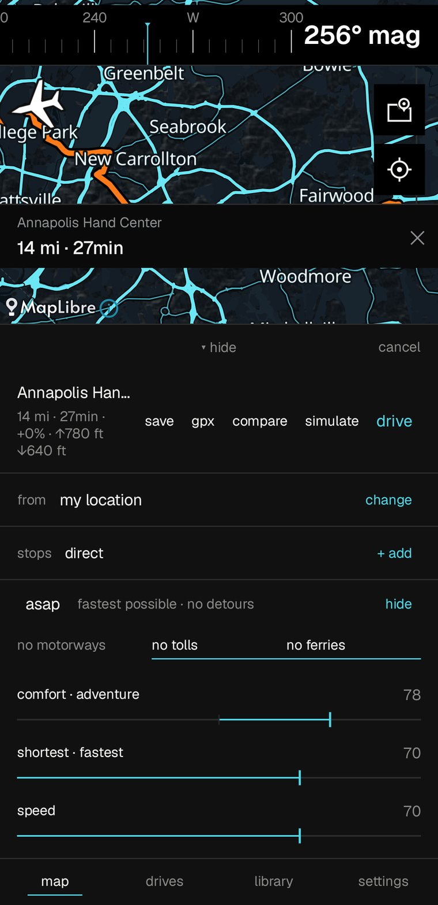
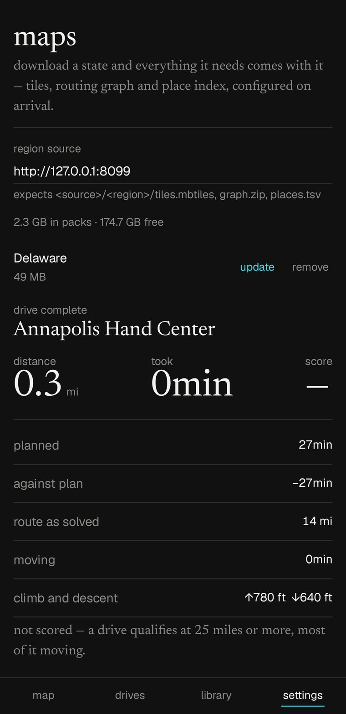
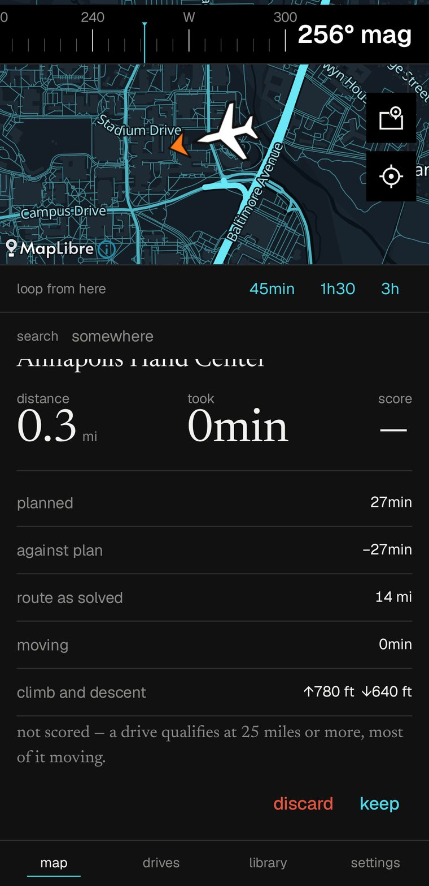
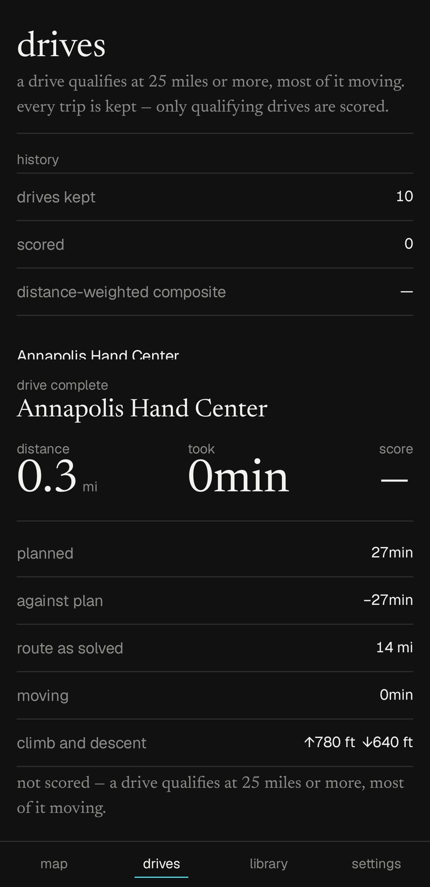
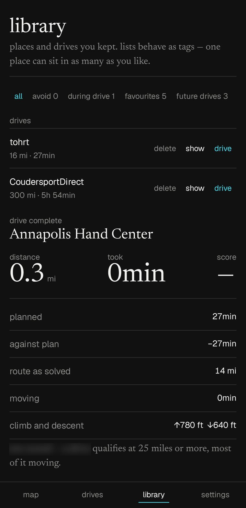

tamepest
a driving app that works with the aeroplane mode on.
the roads, the routing, the search and the guidance all live on the phone. no account, no tiles fetched mid-corner, no map that stops at the edge of signal.
built to be glanced at, not read
the instruction is a band across the top, hard against the edge of the screen. distance largest, the turn drawn as an arrow, the road you are joining filling the rest. it is the arrangement a dedicated satnav uses, because a windscreen is not a page.
underneath, the figures a driver actually asks for — speed, distance left, arrival clock — each with its word below it rather than above. a label on top is read first, and it is never the thing being looked for.
the road already driven greys out behind the car, and the car sits low in the frame so most of the map is the part still ahead.

ask for a drive, not just a destination
five sliders sit under every route — adventure, comfort, time, speed and scenery. they do not reorder a list of routes, they change the cost of every road before the search runs, so the line on the map is genuinely a different drive.
move one and the route redraws under your finger. the theme sets where they start; nothing is saved back over it, so every trip begins from a considered preset rather than from whatever last tuesday needed.
asap is one tap back to neutral: fastest possible, no detours. tolls, ferries, motorways and unpaved roads each have their own switch.

a state at a time, everything included
a region pack is the whole thing: vector tiles, the routing graph and the place index, configured the moment it lands. maryland is 350 mb. house numbers, for searching by street address, are a separate 45 mb you can add or drop.
nothing here is a cache of something online. there is no online. the router searches every installed pack as one graph, so crossing a state line is ordinary rather than the end of the map.
seven states are built today — delaware, dc, maryland, new jersey, pennsylvania, virginia and west virginia. download them here, or point the app at your own server.

four cars, two times of day
pilot, sport, cruise and blank. a theme is not a colour scheme — it sets the map style, the instrument language and where the routing sliders begin. sport is not cruise in red.
each one comes in ink and paper, and the palette can follow the sun or stay where you put it. the launcher icon changes with it.
pick one — the screenshots below are the real thing, captured in each.

every trip kept, the long ones scored
recording starts with the drive rather than with a separate press, because a trip nobody remembered to arm is a trip that cannot be recovered afterwards. distance, moving time, climb and descent, and how the drive went against its own plan.
a drive qualifies for a score at twenty five miles, most of it moving. shorter trips are still kept — they are simply not pretended to be something they are not.
exports as gpx, so a drive can leave the phone in a format anything will open.

places, routes, and areas to keep off
save where you are with one tap, or somewhere else with a long press on the map. lists behave as tags, so one place sits in as many as you like — favourites, future drives, during drive.
a whole solved route can be kept and driven again later, waypoints and all. so can an area to avoid.

on the road soon
the car display is being built the same way as the phone's: tamepest drawing its own instruction band, its own map surface and its own figures strip, rather than handing the host a card to render in its idiom in a corner of its choosing.
the arrows already come from one set of geometry shared between the two, so when it lands the phone and the car cannot drift into drawing different arrows for the same instruction.